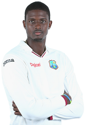

Jason Holder
Captain / Allrounder
Player Profile
Full name: Jason Omar Holder
Born: November 5, 1991, Barbados
Current Age: 27 years 89 days
Major teams: West Indies, Barbados, Barbados Tridents, BCA President's XI, Chennai Super Kings, Combined Campuses and Colleges, Kolkata Knight Riders, Sagicor High Performance Centre, Sunrisers Hyderabad, West Indies A, West Indies Under-19s
Playing role: Bowling allrounder
Batting style: Right-hand bat
Bowling style: Right-arm medium-fast
A reliable batsman and a steady medium-pacer - both suits being works in progress - Holder was born in Barbados and was the recipient of the prestigious Lord Gavron Award in 2009. He played one first-class game before being called up for the 2010 Under-19 World Cup in New Zealand, where he was his team's leading wicket-taker with 13 wickets.
A Test debut came against New Zealand in Bridgetown in June 2014, and he took two wickets and made a fighting 52 at No. 7. He had been signed by Chennai Super Kings in the 2013 IPL auction, but was dropped. However, in 2016, he was picked up by Kolkata Knight Riders.